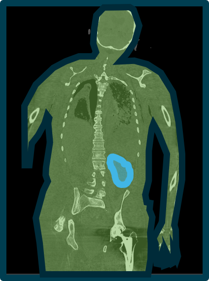
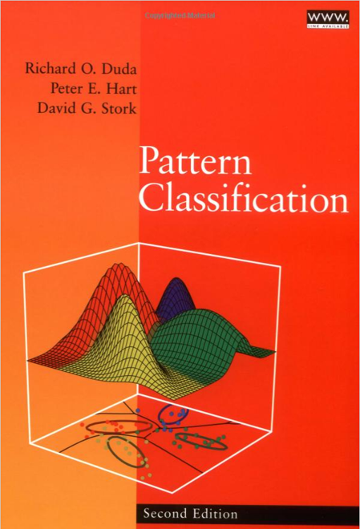

Introduction
Machine Learning for Biomedical Data
Scott Doyle / scottdoy@buffalo.edu
Welcome!
Instructor Information
Scott Doyle
PAS, BME, BMI
Downtown: 4205 JSMBS (M, W, F)
North: 215-J Bonner Hall (Tu, Th)
The Internet
scottdoy@buffalo.edu
716.829.2005
www.scottdoy.com
Machine Learning
A Brief Introduction
Machine Learning Definitions
Machine Learning (ML) uses collected data to do something useful.
- Find underlying patterns (knowledge discovery)
- Simplify a complex phenomenon (model building)
- Place data into categories (classification)
- Predict future data (regression)
Machine Learning Definitions
The job of the ML expert is to:
- Understand and identify the goal
- Collect data
- Select an appropriate model or algorithm
- Evaluate the system in terms of costs
Types of Machine Learning
Supervised Learning
Use labeled datasets to classify new, unseen data
Unsupervised Learning
Use unlabeled data to identify natural groups
Semi-Supervised Learning
Use partially labeled data to handle the process
Reinforcement Learning
An agent learns to complete a task policy of rewards
Data Definitions
The starting point for all ML algorithms is data.
So… what do we mean by “data”?
Data Comes in Many Forms

Data Comes from Many Places
| Symptoms | Lab Tests |
| Demographics | Imaging |
| Cultures | Sequencing |
Data quantifies a specific subject (e.g. patient) through a set of measurements.
Computational Pathology:
Expression of Disease State
Biological structure is primary data.
We can quantify biological structure.
We can model relationships between structure and disease.
Fundamental Hypothesis
Changes in genomic expression manifest as physical changes in tumor morphology


S. S. Badve et al., JCO (2008), Paik et al., N Engl J Med (2004)
Fundamental Hypothesis
Changes in genomic expression manifest as physical changes in tumor morphology

S. S. Badve et al., JCO (2008), Paik et al., N Engl J Med (2004)
Data Fusion Improves Predictions


Atoms to Anatomy Paradigm



Example Problem
Fine Needle Aspirate Classification
Example: Biomedical Image Analysis


Fine Needle Aspirates
Problem Statement
Predict whether a patient’s tumor is benign or malignant, given an FNA image
Building Informative Features
Domain knowledge identifies useful features.
Pathologists already distinguish benign from malignant tumors.
Our job is to convert qualitative features to quantitative ones.
Building Informative Features
The pathologist lists cell nuclei features of importance:
- Radius
- Texture
- Perimeter
- Area
- Smoothness
- Compactness
- Concavity
- Concave Points
- Symmetry
- Fractal Dimension
Feature extraction results in 30 feature values per image.
Selecting Features for the FNA
To begin, we collect training samples to build a model.
- Collect a lot of example images for each class
- Get our expert to label each image as “Malignant” or “Benign”
- Measure the features of interest (image analysis or by hand)
- Build a histogram of the measured feature
Texture of the Nuclei
Selecting New Features
The histograms are similar, with significant overlap between classes.
Our pathologist tells us that malignant nuclei are often larger than benign nuclei, so we can build a second histogram for this new feature.
Average Radius of the Nuclei
Characteristics of Good Features
Better! In general, “good” features for ML are:
Descriptive: Similar within a class, and different between classes
Relevant: Features should make sense
Invariant: Not dependent on how you measure them
Calculating Probabilities from Features
Combinations of Features
Combining features often yields greater class separation.
We can visualize two features as a scatter plot.
Each point is an object, and each axis is a dimension or a feature.
Multivariate Distribution
Variance vs. Generalization
Linear boundaries do not model variance and miss obvious trends.
Complex boundaries fit training perfectly, but do not generalize.
In general, you want the simplest model with the best performance.
Tradeoff: Variance vs. Generalization
Each of these decision boundaries makes errors!
There is always a tradeoff; we need to consider the cost.
Cost is defined by our goals and acceptable performance.
Costs
It is important to recognize the difference between cost and risk.
- Risk is the likelihood you have made an error.
- Cost is the penalty associated with making that error.
Cost Weighting
Should we prioritize some kinds of errors over others?
Not all mistakes carry the same cost. For example:
- A patient is told they have a tumor when they do not (false positive)
- A patient is told they are cancer-free when they are not (false negative)
In Summary
Machine learning turns raw data into actionable insights.
We will cover theory and implementation of popular methods.
- How could you apply these methods to your own data?
- How could quantitative techniques help test hypotheses and generate novel experiments?
Course Details
Interactive Sessions
Interactive sessions every Tuesday 1:00pm – 3:00pm (Zoom)
Two lectures per week, posted Tuesday and Thursday
Attendance is based on watching the recorded lectures OR attending the interactive session and participating (you are free to do both)
Course Resources: Textbooks
Pattern Classification, 2nd Edition
- Duda, Hart, and Stork (DHS)
- ISBN 978-0-471-05669-0
NOT required, but HIGHLY recommended if you are interested in the material.
Also sold with a companion MATLAB book by Stork and Yom-Tov.

Course Resources: Textbooks
Hands On Machine Learning with Scikit-Learn and Tensorflow
- Aurélien Géron
- ISBN 978-1491962299
Very focused on applications in Python programming.
We will not use Tensorflow but we will make heavy use of Scikit-Learn.

Programming Expectations
This is not a programming class; it is a class that uses programming.
Spend time designing algorithms, not debugging.
Programming is a tool to get what you want – if you define what you want up front, the programming almost doesn’t matter. (Almost.)
Programming Tools: MATLAB
Most of you probably have experience with MATLAB.
- You should already know it
- Toolboxes implement most low-level algorithms
- It’s what the BME Department supports
- If you are new, it’s not hard to pick up
Programming Tools: Python
Python is a great alternative.
- It’s free! It’s cross-platform!
- Libraries extend the base Python, just like MATLAB Toolboxes
- “Anaconda” distribution is specifically for data science: https://www.continuum.io/downloads
- Can convert between MATLAB to Python relatively easily
- Most common language for academic / “hobby” ML
Programming Tools: Other
Feel free to use any language you like for your assignments (R, Lua, C++, Fortran…)
I will provide help where I can, but I am most familiar with MATLAB and Python.
Programming Help
Here’s a reasonable workflow when you get an error:
- Write down in English what you’re trying to do.
- Google that sentence with “PYTHON” on the end.
- If that doesn’t work, ask someone!
Programming Help
- General:
- Google is your friend!
- StackOverflow: stackoverflow.com
- MATLAB:
- Mathworks Website: mathworks.com
- Python:
- Beginner’s Guide: wiki.python.org/moin/SimplePrograms
- Scientific Docs: docs.scipy.org/doc/
Course Evaluation
You will be graded primarily on four components:
- Participation: Watch videos, attend Tuesdays, ask questions
- Assignments: 4 assignments per semester
- Paper Presentation: 15-minute formal presentation to the class
- Final Project: Due at the end of the semester
Course Evaluation: Assignments
Assignments will be assessed on:
- Whether you did the assignment
- Writing up what you did, what happened, and your interpretation
- How well you implemented what you learned in class
The assignments build on each other (so don’t delete it when you’re done!)
Course Evaluation: Presentations
Class presentations can be any of the following:
- Paper Discussion: Critical summary of a paper.
- Assignment / Project Presentation: Discuss the status of your project.
- Research Discussion: If you doing research outside of class, tell us about it!
Course Evaluation: Presentations
Presentations should be recorded and uploaded to the UBLearns site.
I will ask questions based on your presentation, and your answers will be part of the evaluation.
Alternatively, you can give a presentation live during the Tuesday session (please e-mail me!)
Course Evaluation: Projects
Assignments build pieces of a classification system.
The project just ties it all together with a formal writeup and hand-in.
- If you understand and complete the assignments, the project is a breeze.
- If you fall behind or don’t grasp the assignments, it’s less pleasant.
Group Work Policy
You can group up for assignment and project following rules:
- Keep it to 3 people or fewer.
- Your group must stay the same throughout the semester.
- Assignments must include group names and contributions.
- Groups are graded together on the assigments and project.
Course Topics Overview
Expected Topics: Traditional ML
- Bayesian Decision Theory
- Nonmetric Methods: Decision Trees and Random Forests
- Linear Discriminants and Perceptrons
- Support Vector Machines
- Parametric and Non-Parametric Techniques
- Clustering and Expectation Maximization
- Component Analysis and Dimensionality Reduction
- Boosting and Classifier Ensembles
Expected Topics: Deep Learning and AI
- Neural Networks
- CNNs
- RNNs
- Reinforcement Learning
- Ethics and Meta-issues with ML / AI
(Un)Expected Topics
If you are interested in something, e-mail me and we can cover it.
Course Content Overview: Background
- Linear Algebra:
- Matrix Inner / Outer Products
- Derivatives, Determinants, Trace
- Eigenvectors / Eigenvalues
- Probability Theroy:
- Discrete Random Variables, Dependence
- Expected Value, Standard Deviation
- Gaussian Distributions
- Information Theory:
- Entropy
- Mutual Information
- Computational Complexity
Next Class
Mathematical Background and Coding Intro
In the next lecture we will cover:
- Machine Learning design philosophy and project setup
- Introduction to programming environment and resources
- Mathematical background and foundations
Instructor Information
Scott Doyle
PAS, BME, BMI
Downtown: 4205 JSMBS (M, W, F)
North: 215-J Bonner Hall (Tu, Th)
The Internet
scottdoy@buffalo.edu
716.829.2005
www.scottdoy.com